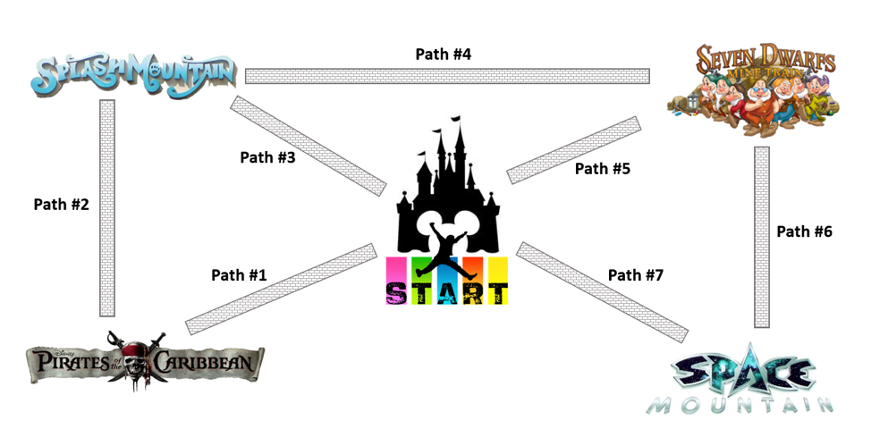

Problem made by Lockheed Martin, is CodeQuest 2018 Problem 18
This problem has a difficulty of 90.
Your family is going to Disney World in Orlando, FL during the busiest time of the year, so it’s up to you to plan the most efficient way to hit the most popular rides: Pirates of the Caribbean, Seven Dwarfs Mine Train, Space Mountain, and Splash Mountain. Your challenge is to find the quickest way to navigate through crowds, parked strollers, and character Meet-and-Greets.
The map below shows the locations of all four rides and the paths that lead to them. You will be given the amount of time it takes to walk each path. If there is ever a tie between two or more paths, choose the path that starts with the smallest Path #. For example, if Path #1 > Path #2 > Path #4 > Path #6 takes the same amount of time as Path #7 > Path #6 > Path #4 > Path #2, you should choose the first option. Sometimes it may be fastest to revisit a ride to which you’ve already been!

The first line of the file Prob18.in.txt will contain a positive integer T denoting the number of test cases that follow. Each test case will have the following input:
• A single line with seven positive integers separated by spaces, corresponding to the time it will take to walk each of the seven paths in the map above. The path times will be in order, starting with Path #1’s time and ending with Path #7’s. All path times will be greater than 0.
3
5 10 7 6 2 4 12
15 8 20 7 20 5 10
4 8 10 6 6 8 10
For each test case, your program should output one line containing the fastest path to ride all four attractions. If the fastest path is through Path #1 > Path #2 > Path #3 > Path #5 > Path #6, then you will print: 1 2 3 5 6
1 2 4 6
7 6 4 2
1 2 4 6